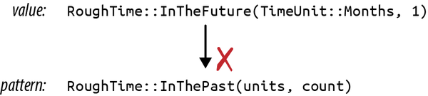
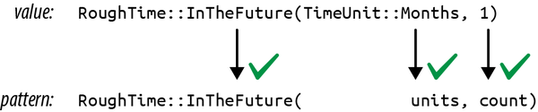
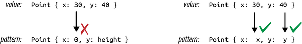

Chapter 10. Enums and Patterns
Surprising how much computer stuff makes sense viewed as tragic deprivation of sum types (cf. deprivation of lambdas).
The first topic of this chapter is potent, as old as the hills, happy to help you get a lot done in short order (for a price), and known by many names in many cultures. But it’s not the devil. It’s a kind of user-defined data type, long known to ML and Haskell hackers as sum types, discriminated unions, or algebraic data types. In Rust, they are called enumerations, or simply enums. Unlike the devil, they are quite safe, and the price they ask is no great privation.
C++ and C# have enums; you can use them to define your own type whose values are a set of named constants. For example, you might define a type named Color with values Red, Orange, Yellow, and so on. This kind of enum works in Rust, too. But Rust takes enums much further. A Rust enum can also contain data, even data of varying types. For example, Rust’s Result<String, io::Error> type is an enum; such a value is either an Ok value containing a String or an Err value containing an io::Error. This is beyond what C++ and C# enums can do. It’s more like a C union—but unlike unions, Rust enums are type-safe.
Enums are useful whenever a value might be either one thing or another. The “price” of using them is that you must access the data safely, using pattern matching, our topic for the second half of this chapter.
Patterns, too, may be familiar if you’ve used unpacking in Python or destructuring in JavaScript, but Rust takes patterns further. Rust patterns are a little like regular expressions for all your data. They’re used to test whether or not a value has a particular desired shape. They can extract several fields from a struct or tuple into local variables all at once. And like regular expressions, they are concise, typically doing it all in a single line of code.
This chapter starts with the basics of enums, showing how data can be associated with enum variants and how enums are stored in memory. Then we’ll show how Rust’s patterns and match statements can concisely specify logic based on enums, structs, arrays, and slices. Patterns can also include references, moves, and if conditions, making them even more capable.
Enums
Simple, C-style enums are straightforward:
enumOrdering{Less,Equal,Greater,}
This declares a type Ordering with three possible values, called variants or constructors: Ordering::Less, Ordering::Equal, and Ordering::Greater. This particular enum is part of the standard library, so Rust code can import it, either by itself:
usestd::cmp::Ordering;fncompare(n:i32,m:i32)->Ordering{ifn<m{Ordering::Less}elseifn>m{Ordering::Greater}else{Ordering::Equal}}
or with all its constructors:
usestd::cmp::Ordering::{self,*};// `*` to import all childrenfncompare(n:i32,m:i32)->Ordering{ifn<m{Less}elseifn>m{Greater}else{Equal}}
After importing the constructors, we can write Less instead of Ordering::Less, and so on, but because this is less explicit, it’s generally considered better style not to import them except when it makes your code much more readable.
In memory, values of C-style enums are stored as integers. Occasionally it’s useful to tell Rust which integers to use:
enumHttpStatus{Ok=200,NotModified=304,NotFound=404,...}
Otherwise Rust will assign the numbers for you, starting at 0.
By default, Rust stores C-style enums using the smallest built-in integer type that can accommodate them. Most fit in a single byte:
assert_eq!(size_of::<Ordering>(),1);assert_eq!(size_of::<HttpStatus>(),2);// 404 doesn't fit in a u8
You can override Rust’s choice of in-memory representation by adding a #[repr] attribute to the enum. For details, see “Finding Common Data Representations”.
Casting a C-style enum to an integer is allowed:
assert_eq!(HttpStatus::Okasi32,200);
However, casting in the other direction, from the integer to the enum, is not. Unlike C and C++, Rust guarantees that an enum value is only ever one of the values spelled out in the enum declaration. An unchecked cast from an integer type to an enum type could break this guarantee, so it’s not allowed. You can either write your own checked conversion:
fnhttp_status_from_u32(n:u32)->Option<HttpStatus>{matchn{200=>Some(HttpStatus::Ok),304=>Some(HttpStatus::NotModified),404=>Some(HttpStatus::NotFound),..._=>None,}}
or use the enum_primitive crate. It contains a macro that autogenerates this kind of conversion code for you.
As with structs, the compiler will implement features like the == operator for you, but you have to ask:
#[derive(Copy, Clone, Debug, PartialEq, Eq)]enumTimeUnit{Seconds,Minutes,Hours,Days,Months,Years,}
Enums can have methods, just like structs:
implTimeUnit{/// Returns the plural noun for this time unit.fnplural(self)->&'staticstr{matchself{TimeUnit::Seconds=>"seconds",TimeUnit::Minutes=>"minutes",TimeUnit::Hours=>"hours",TimeUnit::Days=>"days",TimeUnit::Months=>"months",TimeUnit::Years=>"years",}}/// Returns the singular noun for this time unit.fnsingular(self)->&'staticstr{self.plural().trim_end_matches('s')}}
Enums are sometimes used in C/C++ to declare a bunch of related integer constants. For example, it’s fairly common to use a single integer to store a boolean option per bit, using bitwise AND and OR operations, and sometimes the bits are declared using an enum:
// C/C++ exampleenumopen_flags_t{READ=1<<0,WRITE=1<<1,CREATE=1<<2,...};intfd=open_file("jokes/dad.txt",WRITE|CREATE);
This idiom doesn’t translate directly to Rust enums. Instead, use an integer type and constants, as shown below; or check out the bitflags crate, which helps you define an integer-wrapping struct for this use case.
typeOpenFlags=u32;constREAD:OpenFlags=1<<0;constWRITE:OpenFlags=1<<1;constCREATE:OpenFlags=1<<2;...letflags=WRITE|CREATE;
So much for C-style enums. The more interesting sort of Rust enum is the kind whose variants hold data. We’ll show how these are stored in memory, how to make them generic by adding type parameters, and how to build complex data structures from enums.
Enums with Data
Some programs always need to display full dates and times down to the millisecond, but for most applications, it’s more user-friendly to use a rough approximation, like “two months ago.” We can write an enum to help with that, using the enum defined earlier:
/// A timestamp that has been deliberately rounded off, so our program/// says "6 months ago" instead of "February 9, 2016, at 9:49 AM".#[derive(Copy, Clone, Debug, PartialEq)]enumRoughTime{InThePast(TimeUnit,u32),JustNow,InTheFuture(TimeUnit,u32),}
Two of the variants in this enum, InThePast and InTheFuture, take arguments. These are called tuple variants. Like tuple structs, these constructors are functions that create new RoughTime values:
letfour_score_and_seven_years_ago=RoughTime::InThePast(TimeUnit::Years,4*20+7);letthree_hours_from_now=RoughTime::InTheFuture(TimeUnit::Hours,3);
Enums can also have struct variants, which contain named fields, just like ordinary structs:
enumShape{Sphere{center:Point3d,radius:f32},Cuboid{corner1:Point3d,corner2:Point3d},}letunit_sphere=Shape::Sphere{center:ORIGIN,radius:1.0,};
In all, Rust has three kinds of enum variant, echoing the three kinds of struct we showed in the previous chapter. Variants with no data correspond to unit-like structs. Tuple variants look and function just like tuple structs. Struct variants have curly braces and named fields. A single enum can have variants of all three kinds:
enumRelationshipStatus{Single,InARelationship,ItsComplicated(Option<String>),ItsExtremelyComplicated{car:DifferentialEquation,cdr:EarlyModernistPoem,},}
Enums in Memory
In memory, enums with data are stored as a small integer tag, plus enough memory to hold all the fields of the largest variant. The tag field is for Rust’s internal use. It tells which constructor created the value and therefore which fields it has.
As of this writing, RoughTime fits in 8 bytes, as shown in Figure 10-1.

Figure 10-1. RoughTime values in memory
Rust makes no promises about enum layout, however, in order to leave the door open for future optimizations. In some cases, it would be possible to pack an enum more efficiently than the figure suggests. For instance, the Rust compiler can optimize away the tag field for some enums, as we’ll see later.
Rich Data Structures Using Enums
Enums are also useful for quickly implementing tree-like data structures. For example, suppose a Rust program needs to work with arbitrary JSON data. In memory, any JSON document can be represented as a value of this Rust type:
usestd::collections::HashMap;enumJson{Null,Boolean(bool),Number(f64),String(String),Array(Vec<Json>),Object(Box<HashMap<String,Json>>),}
The explanation of this data structure in English can’t improve much upon the Rust code. The JSON standard specifies the various data types that can appear in a JSON document: null, Boolean values, numbers, strings, arrays of JSON values, and objects with string keys and JSON values. The Json enum simply spells out these types.
This is not a hypothetical example. A very similar enum can be found in serde_json, a serialization library for Rust structs that is one of the most-downloaded crates on crates.io.
The Box around the HashMap that represents an Object serves only to make all Json values more compact. In memory, values of type Json take up four machine words. String and Vec values are three words, and Rust adds a tag byte. Null and Boolean values don’t have enough data in them to use up all that space, but all Json values must be the same size. The extra space goes unused. Figure 10-2 shows some examples of how Json values actually look in memory.
A HashMap is larger still. If we had to leave room for it in every Json value, they would be quite large, eight words or so. But a Box<HashMap> is a single word: it’s just a pointer to heap-allocated data. We could make Json even more compact by boxing more fields.

Figure 10-2. Json values in memory
What’s remarkable here is how easy it was to set this up. In C++, one might write a class for this:
classJSON{private:enumTag{Null,Boolean,Number,String,Array,Object};unionData{boolboolean;doublenumber;shared_ptr<string>str;shared_ptr<vector<JSON>>array;shared_ptr<unordered_map<string,JSON>>object;Data(){}~Data(){}...};Tagtag;Datadata;public:boolis_null()const{returntag==Null;}boolis_boolean()const{returntag==Boolean;}boolget_boolean()const{assert(is_boolean());returndata.boolean;}voidset_boolean(boolvalue){this->~JSON();// clean up string/array/object valuetag=Boolean;data.boolean=value;}...};
At 30 lines of code, we have barely begun the work. This class will need constructors, a destructor, and an assignment operator. An alternative would be to create a class hierarchy with a base class JSON and subclasses JSONBoolean, JSONString, and so on. Either way, when it’s done, our C++ JSON library will have more than a dozen methods. It will take a bit of reading for other programmers to pick it up and use it. The entire Rust enum is eight lines of code.
Generic Enums
Enums can be generic. Two examples from the standard library are among the most-used data types in the language:
enumOption<T>{None,Some(T),}enumResult<T,E>{Ok(T),Err(E),}
These types are familiar enough by now, and the syntax for generic enums is the same as for generic structs.
One unobvious detail is that Rust can eliminate the tag field of Option<T> when the type T is a reference, Box, or other smart pointer type. Since none of those pointer types is allowed to be zero, Rust can represent Option<Box<i32>>, say, as a single machine word: 0 for None and nonzero for Some pointer. This makes such Option types close analogues to C or C++ pointer values that could be null. The difference is that Rust’s type system requires you to check that an Option is Some before you can use its contents. This effectively eliminates null pointer dereferences.
Generic data structures can be built with just a few lines of code. Here is a BinaryTree type that can store any number of values of type T:
// An ordered collection of `T`s.enumBinaryTree<T>{Empty,NonEmpty(Box<TreeNode<T>>),}// A part of a BinaryTree.structTreeNode<T>{element:T,left:BinaryTree<T>,right:BinaryTree<T>,}
A great deal of information is packed into these two definitions, so we will take the time to translate the code word for word into English. Each BinaryTree value is either Empty or NonEmpty. If it’s Empty, then it contains no data at all. If NonEmpty, then it has a Box, a pointer to a heap-allocated TreeNode.
Each TreeNode value contains one actual element, as well as two more BinaryTree values. This means a tree can contain subtrees, and thus a NonEmpty tree can have any number of descendants.
A sketch of a value of type BinaryTree<&str> is shown in Figure 10-3. As with Option<Box<T>>, Rust eliminates the tag field, so a BinaryTree value is just one machine word.
Building any particular node in this tree is straightforward:
useself::BinaryTree::*;letjupiter_tree=NonEmpty(Box::new(TreeNode{element:"Jupiter",left:Empty,right:Empty,}));
Larger trees can be built from smaller ones:
letmars_tree=NonEmpty(Box::new(TreeNode{element:"Mars",left:jupiter_tree,right:mercury_tree,}));
Naturally, this assignment transfers ownership of jupiter_tree and mercury_tree to their new parent node.

Figure 10-3. A BinaryTree containing six strings
The remaining parts of the tree follow the same patterns. The root node is no different from the others:
lettree=NonEmpty(Box::new(TreeNode{element:"Saturn",left:mars_tree,right:uranus_tree,}));
Later in this chapter, we’ll show how to implement an add method on the BinaryTree type so that we can instead write:
letmuttree=BinaryTree::Empty;forplanetinplanets{tree.add(planet);}
No matter what language you’re coming from, creating data structures like BinaryTree in Rust will likely take some practice. It won’t be obvious at first where to put the Boxes. One way to find a design that will work is to draw a picture like Figure 10-3 that shows how you want things laid out in memory. Then work backward from the picture to the code. Each collection of rectangles is a struct or tuple; each arrow is a Box or other smart pointer. Figuring out the type of each field is a bit of a puzzle, but a manageable one. The reward for solving the puzzle is control over your program’s memory usage.
Now comes the “price” we mentioned in the introduction. The tag field of an enum costs a little memory, up to eight bytes in the worst case, but that is usually negligible. The real downside to enums (if it can be called that) is that Rust code cannot throw caution to the wind and try to access fields regardless of whether they are actually present in the value:
letr=shape.radius;// error: no field `radius` on type `Shape`
The only way to access the data in an enum is the safe way: using patterns.
Patterns
Recall the definition of our RoughTime type from earlier in this chapter:
enumRoughTime{InThePast(TimeUnit,u32),JustNow,InTheFuture(TimeUnit,u32),}
Suppose you have a RoughTime value and you’d like to display it on a web page. You need to access the TimeUnit and u32 fields inside the value. Rust doesn’t let you access them directly, by writing rough_time.0 and rough_time.1, because after all, the value might be RoughTime::JustNow, which has no fields. But then, how can you get the data out?
1fnrough_time_to_english(rt:RoughTime)->String{2matchrt{3RoughTime::InThePast(units,count)=>{4format!("{count} {} ago",units.plural())5}6RoughTime::JustNow=>{7"just now".to_string()8}9RoughTime::InTheFuture(units,count)=>{10format!("{count} {} from now",units.plural())11}12}13}
match performs pattern matching; in this example, the patterns are the parts that appear before the => symbol on lines 3, 6, and 9. Patterns that match RoughTime values look just like the expressions used to create RoughTime values. This is no coincidence. Expressions produce values; patterns consume values. The two use a lot of the same syntax.
Let’s step through what happens when this match expression runs. Suppose rt is the value RoughTime::InTheFuture(TimeUnit::Months, 1). Rust first tries to match this value against the pattern on line 3. As you can see in Figure 10-4, it doesn’t match.

Figure 10-4. A RoughTime value and pattern that do not match
Pattern matching an enum, struct, or tuple works as though Rust is doing a simple left-to-right scan, checking each component of the pattern to see if the value matches it. If it doesn’t, Rust moves on to the next pattern.
The patterns on lines 3 and 6 fail to match. But the pattern on line 9 succeeds (Figure 10-5).

Figure 10-5. A successful match
When a pattern contains simple identifiers like units and count, those become local variables in the code following the pattern. Whatever is present in the value is moved or copied into the new variables. Rust stores TimeUnit::Months in units and 1 in count, runs line 10, and returns the string "1 months from now".
That output has a minor grammatical issue, which can be fixed by adding another arm to the match:
RoughTime::InTheFuture(unit,1)=>{format!("a {} from now",unit.singular())}
This arm matches only if the count field is exactly 1. Note that this new code must be added before line 9. If we add it at the end, Rust will never get to it, because the pattern on line 9 matches all InTheFuture values. The Rust compiler will warn about an “unreachable pattern” if you make this kind of mistake.
Even with the new code, RoughTime::InTheFuture(TimeUnit::Hours, 1) still presents a problem: the result "a hour from now" is not quite right. Such is the English language. This too can be fixed by adding another match arm. We’ll leave that to you, as an easy exercise.
As this example shows, pattern matching works hand in hand with enums and can even test the data they contain, making match a powerful, flexible replacement for C’s switch statement. So far, we’ve only seen patterns that match enum values. There’s more to it than that. Rust patterns are their own little language, summarized in Table 10-1. We’ll spend most of the rest of the chapter on the features shown in this table.
| Pattern type | Example | Notes |
|---|---|---|
| Literal |
100"name" |
Matches an exact value; the name of a const is also allowed |
| Range |
0..100'a'..='z'256.. |
Matches any value in range |
| Wildcard | _ |
Matches any value and ignores it |
| Variable |
namemut count |
Matches any value and moves or copies it into a new local variable |
ref variable |
ref fieldref mut field |
Borrows a reference to the matched value instead of moving or copying it |
| Binding with subpattern |
val @ 0..=99ref circle @ Shape::Circle { .. } |
Matches the pattern to the right of @, using the variable name to the left |
| Enum pattern |
Some(value)NonePet::Orca |
|
| Tuple pattern |
(key, value)(r, g, b) |
|
| Array pattern |
[a, b, c, d, e, f, g][heading, carom, correction] |
|
| Slice pattern |
[first, second][first, _, third][first, .., last][] |
|
| Struct pattern |
Color(r, g, b)Point { x, y }Card { suit: Clubs, rank: n }Account { id, name, .. } |
|
| Reference |
&value&(k, v) |
Matches a reference value and dereferences it |
| Or patterns |
'a' | 'A'Some("left" | "right" | "center") |
Matches any of several patterns |
| Guard expression | x if x * x <= r2 |
In match only (not valid in let, etc.) |
Literals, Variables, and Wildcards in Patterns
So far, we’ve shown match expressions working with enums. Other types can be matched too. When you need something like a C switch statement, use match with an integer value. Integer literals like 0 and 1 can serve as patterns:
matchmeadow.count_rabbits(){0=>{}// nothing to say1=>println!("A rabbit is nosing around in the clover."),n=>println!("There are {n} rabbits hopping about in the meadow"),}
The pattern 0 matches if there are no rabbits in the meadow. 1 matches if there is just one. If there are two or more rabbits, we reach the third pattern, n. This pattern is just a variable name. It can match any value, and the matched value is moved or copied into a new local variable. So in this case, the value of meadow.count_rabbits() is stored in a new local variable n, which we then print.
Other literals can be used as patterns too, including Booleans, characters, and even strings:
letcalendar=matchsettings.get_string("calendar"){"gregorian"=>Calendar::Gregorian,"chinese"=>Calendar::Chinese,"ethiopian"=>Calendar::Ethiopian,other=>returnparse_error("calendar",other),};
In this example, other serves as a catchall pattern like n in the previous example. These patterns play the same role as a default case in a switch statement, matching values that don’t match any of the other patterns.
If you need a catchall pattern, but you don’t care about the matched value, you can use a single underscore _ as a pattern, the wildcard pattern:
letcaption=matchphoto.tagged_pet(){Pet::Tyrannosaur=>"RRRAAAAAHHHHHH",Pet::Samoyed=>"*dog thoughts*",_=>"I'm cute, love me",// generic caption, works for any pet};
The wildcard pattern matches any value, but without storing it anywhere. Since Rust requires every match expression to handle all possible values, a wildcard is often required at the end. Even if you’re very sure the remaining cases can’t occur, you must at least add a fallback arm, perhaps one that panics:
// There are many Shapes, but we only support "selecting"// either some text, or everything in a rectangular area.// You can't select an ellipse or trapezoid.matchdocument.selection(){Shape::TextSpan(start,end)=>paint_text_selection(start,end),Shape::Rectangle(rect)=>paint_rect_selection(rect),_=>panic!("unexpected selection type"),}
Tuple and Struct Patterns
Tuple patterns match tuples. They’re useful any time you want to get multiple pieces of data involved in a single match:
/// Converts an hour AM or PM to the 24-hour convention./// For example, "4 P.M." is 16, and "12 A.M." is 0.fnto_24_hour_time(hour:u32,half:DayHalf)->u32{match(hour,half){(12,DayHalf::Am)=>0,(hour,DayHalf::Am)=>hour,(12,DayHalf::Pm)=>12,(hour,DayHalf::Pm)=>12+hour,}}
Struct patterns use curly braces, just like struct expressions. They contain a subpattern for each field:
matchballoon.location{Point{x:0,y:height}=>{println!("straight up {height} meters");}Point{x:x,y:y}=>{println!("at ({x}m, {y}m)");}}
In this example, if the first arm matches, then balloon.location.y is stored in the new local variable height.
Suppose balloon.location is Point { x: 30, y: 40 }. As always, Rust checks each component of each pattern in turn (Figure 10-6).

Figure 10-6. Pattern matching with structs
The second arm matches, so the output would be at (30m, 40m).
Patterns like Point { x: x, y: y } are common when matching structs, and the redundant names are visual clutter, so Rust has a shorthand for this: Point {x, y}. The meaning is the same. This pattern still stores a point’s x field in a new local x and its y field in a new local y.
Even with the shorthand, it is cumbersome to match a large struct when we only care about a few fields:
matchget_account(id){...Some(Account{id:_,status:_,name,language,// <--- the 2 things we care aboutaddress:_,birthday:_,eye_color:_,pet:_,security_question:_,hashed_innermost_secret:_,is_adamantium_preferred_customer:_,})=>language.show_custom_greeting(name),}
To avoid this, use .. to tell Rust you don’t care about any of the other fields:
Some(Account{name,language,..})=>{language.show_custom_greeting(name);}
Matching References
As we’ve seen, matching a noncopyable value moves the value. Continuing with the account example, this code would be invalid:
matchcurrent_user{...Some(Account{name,language,..})=>{ui.greet(&name,&language);ui.show_settings(¤t_user);// error: borrow of moved value}}
Here, the two fields name and language are moved from current_user into local variables. The rest of current_user is dropped. We can’t borrow a reference to it afterward.
If name and language were both copyable values, Rust would copy the fields instead of moving them, and this code would be fine. But suppose these are Strings. What can we do?
The easiest fix is to match on a reference to current_user.
match¤t_user{// <-- note: added `&` here...Some(Account{name,language,..})=>{ui.greet(name,language);// <-- note: removed `&`s hereui.show_settings(¤t_user);// ok}}
Since we’re now matching a reference, the variables name and language become references to the corresponding fields of current_user. This is why we removed the two &s in the line calling ui.greet. In the original, we passed this method references to the String variables name and language. In the new code, those variables are already references—to String fields still owned by current_user.
Everywhere you could match on a value of some type T, you can also match on a &T or &mut T. No special syntax is needed in the patterns. The variables in the pattern simply get references to the values they match instead of moves or copies.
Reference Patterns
Generally speaking, when you have a reference to something you’d like to pattern-match, you’ll simply match on the reference, as described in the preceding section. However, Rust also has special syntax for borrowing and dereferencing in patterns, useful in a few specific cases.
A borrowing pattern uses the ref keyword. Inserting ref before any variable in a pattern makes Rust borrow a reference to the matched value instead of moving or copying it. The phrase ref mut borrows a mut reference. For example, if you’re matching a struct with several copyable fields, but you’d also like to match a non-copyable field by reference, you might use a pattern like this:
// Copy `id` and `status`, borrow `name`:Account{id,status,refname,..}=>...
A dereferencing pattern uses the & operator. Inserting & before any part of a pattern makes it match a reference, and dereference it. For example, suppose we have an iterator chars over the characters in a string, and it has a method chars.peek() that returns an Option<&char>: a reference to the next character, if any. (Peekable iterators do in fact return an Option<&ItemType>, as we’ll see in Chapter 15.) We can use an & pattern to get the character as a char, not a &char:
matchchars.peek(){Some(&c)=>println!("coming up: {c:?}"),None=>println!("end of chars"),}
This syntax is a bit surprising, because Rust is following a pointer here, an action we usually associate with the * operator, not the & operator. The thing to remember is that patterns and expressions are natural opposites. Whereas the expression (x, y) makes two values into a new tuple, the pattern (x, y) does the opposite: it matches a tuple and breaks out the two values. It’s the same with &. In an expression, & creates a reference. In a pattern, & matches a reference.
Array and Slice Patterns
Array patterns match arrays. They’re often used to filter out some special-case values and are useful any time you’re working with arrays whose values have a different meaning based on position.
For example, when converting hue, saturation, and lightness (HSL) color values to red, green, blue (RGB) color values, colors with zero lightness or full lightness are just black or white. We could use a match expression to deal with those cases simply.
fnhsl_to_rgb(hsl:[u8;3])->[u8;3]{matchhsl{[_,_,0]=>[0,0,0],[_,_,255]=>[255,255,255],...}}
Slice patterns are similar, but unlike arrays, slices have variable lengths, so slice patterns match not only on values but also on length. .. in a slice pattern matches any number of elements:
fngreet_people(names:&[String]){matchnames{[]=>println!("Hello, nobody."),[a]=>println!("Hello, {a}."),[a,b]=>println!("Hello, {a} and {b}."),[a,..,b]=>println!("Hello, everyone from {a} to {b}."),}}
Since names is a reference to a slice, the variables a and b in this example are references to individual elements. Their type is &String, not String.
Slice patterns work only on slices, not vectors. To match data in a vector, you can write match &my_vec[..], borrowing a reference to the slice containing all of the elements.
Match Guards
Sometimes a match arm has additional conditions that must be met before it can be considered a match. Suppose we’re implementing a board game with hexagonal spaces, and the player just clicked to move a piece. To confirm that the click was valid, we might try something like this:
fncheck_move(current_hex:Hex,click:Point)->game::Result<Hex>{matchpoint_to_hex(click){None=>{Err("That's not a game space.")}// try to match if user clicked the current_hex// (it doesn't work: see explanation below)Some(current_hex)=>{Err("You are already there! You must click somewhere else.")}Some(other_hex)=>{Ok(other_hex)}}}
This fails because identifiers in patterns introduce new variables. The pattern Some(current_hex) here creates a new local variable current_hex, shadowing the argument current_hex. Rust emits several warnings about this code—in particular, the last arm of the match is unreachable. One way to fix this is simply to use an if expression in the match arm:
matchpoint_to_hex(click){None=>Err("That's not a game space."),Some(hex)=>{ifhex==current_hex{Err("You are already there! You must click somewhere else")}else{Ok(hex)}}}
But Rust also provides match guards, extra conditions that must be true in order for a match arm to apply, written as if CONDITION, between the pattern and the arm’s => token:
matchpoint_to_hex(click){None=>Err("That's not a game space."),Some(hex)ifhex==current_hex=>{Err("You are already there! You must click somewhere else")}Some(hex)=>Ok(hex),}
If the pattern matches, but the condition is false, matching continues with the next arm.
Matching Multiple Possibilities
A pattern of the form pat1 | pat2 matches if either subpattern matches:
letat_end=matchchars.peek(){Some('\r'|'\n')|None=>true,_=>false,};
In an expression, | is the bitwise OR operator, but here it works more like the | symbol in a regular expression. at_end is set to true if chars.peek() is None, or a Some holding a carriage return or line feed.
Use .. or ..= to match a whole range of values.
constKILO:usize=1024;constMEGA:usize=1024*KILO;constGIGA:usize=1024*MEGA;matchnum_bytes{0..KILO=>num_bytes.to_string(),KILO..MEGA=>format!("{}K",num_bytes/KILO),MEGA..GIGA=>format!("{}M",num_bytes/MEGA),GIGA..=>"big".to_string(),}
Ranges using the ..= operator include the end value, so '0'..='9' matches all the ASCII digits:
matchnext_char{'0'..='9'=>self.read_number(),'a'..='z'|'A'..='Z'=>self.read_word(),' '|'\t'|'\n'=>self.skip_whitespace(),_=>self.handle_punctuation(),}
Binding with @ Patterns
Finally, x @ pattern matches exactly like the given pattern, but on success, instead of creating variables for parts of the matched value, it creates a single variable x and moves or copies the whole value into it. For example, say you have this code:
matchself.get_selection(){Shape::Rect(top_left,bottom_right)=>{optimized_paint(&Shape::Rect(top_left,bottom_right));}other_shape=>{paint_outline(other_shape.get_outline());}}
Note that the first case unpacks a Shape::Rect value, only to rebuild an identical Shape::Rect value on the next line. This can be rewritten to use an @ pattern:
rect@Shape::Rect(..)=>{optimized_paint(&rect);}
@ patterns are also useful with ranges:
matchchars.next(){Some(digit@'0'..='9')=>read_number(digit,chars),...},
And they can be used to capture “the rest of the list” in a slice pattern:
let[first,second,others@..]=&ranked_teams[..]else{returnErr(TournamentError::NotEnoughTeams);};assert_eq!(others,&ranked_teams[2..]);
Where Patterns Are Allowed
Although patterns are most prominent in match expressions, they are also allowed in several other places, typically in place of an identifier. The meaning is always the same: instead of just storing a value in a single variable, Rust uses pattern matching to take the value apart.
Patterns can be used to...
// ...unpack a struct into three new local variablesletTrack{album,track_number,title,..}=song;// ...unpack a function argument that's a tuplefndistance_to((x,y):(f64,f64))->f64{...}// ...iterate over keys and values of a HashMapfor(id,document)in&cache_map{println!("Document #{id}: {}",document.title);}// ...automatically dereference an argument to a closure// (handy because sometimes other code passes you a reference// when you'd rather have a copy)letsum=numbers.fold(0,|a,&num|a+num);
Each of these saves two or three lines of boilerplate code. The same concept exists in some other languages: in JavaScript, it’s called destructuring, while in Python, it’s unpacking.
Note that in all four examples, we use patterns that are guaranteed to match. The pattern Point3d { x, y, z } matches every possible value of the Point3d struct type, (x, y) matches any (f64, f64) pair, and so on. Patterns that always match are special in Rust. They’re called irrefutable patterns, and they’re the only patterns allowed in the four places shown here (after let, in function arguments, after for, and in closure arguments).
A refutable pattern is one that might not match, like Ok(x), which doesn’t match an error result, or '0'..='9', which doesn’t match the character 'Q'. Refutable patterns can be used in match arms, because match is designed for them: if one pattern fails to match, it’s clear what happens next. The four preceding examples are places in Rust programs where a pattern can be handy, but the language doesn’t allow for match failure.
Refutable patterns are also allowed with if let, while let, and let ... else, which can be used to...
// ...handle just one enum variant speciallyifletRoughTime::InTheFuture(_,_)=user.date_of_birth(){user.set_time_traveler(true);}// ...run some code only if a table lookup succeedsifletSome(document)=cache_map.get(&id){returnsend_cached_response(document);}// ...repeatedly try something until it succeedswhileletErr(err)=present_cheesy_anti_robot_task(){log_robot_attempt(err);// let the user try again (it might still be a human)}// ...manually loop over an iteratorwhileletSome(_)=lines.peek(){read_paragraph(&mutlines);}// ... exit early if a lookup failsletSome(account)=database.get_account(account_id)else{returnErr(Error::AccountNotFound);};
For details about these constructs, refer back to “if let”, “Loops”, and “let else”.
Lastly, the macro matches!(value, pattern) simply checks a value against a pattern and returns true if it matches. It is shorthand for:
matchvalue{pattern=>true,_=>false,}
Populating a Binary Tree
Earlier we promised to show how to implement a method, BinaryTree::add(), that adds a node to a BinaryTree of this type:
// An ordered collection of `T`s.enumBinaryTree<T>{Empty,NonEmpty(Box<TreeNode<T>>),}// A part of a BinaryTree.structTreeNode<T>{element:T,left:BinaryTree<T>,right:BinaryTree<T>,}
You now know enough about patterns to write this method. An explanation of binary search trees is beyond the scope of this book, but for readers already familiar with the topic, it’s worth seeing how it plays out in Rust.
1impl<T:Ord>BinaryTree<T>{2fnadd(&mutself,value:T){3letmutplace=self;4whileletBinaryTree::NonEmpty(node)=place{5ifvalue<=node.element{6place=&mutnode.left;7}else{8place=&mutnode.right;9}10}11*place=BinaryTree::NonEmpty(Box::new(TreeNode{12element:value,13left:BinaryTree::Empty,14right:BinaryTree::Empty,15}));16}17}
Line 1 tells Rust that we’re defining a method on BinaryTrees of ordered types. This is the same syntax we used to define methods on generic structs in “Defining Methods with impl”, but with a new restriction, T: Ord, to require T to be a type that implements the Ord trait. This enables our use of the comparison operator <= on line 5.
The method uses the local variable place to point to its current place within the tree. The pattern on line 4 tests whether the current place is Empty or NonEmpty:
whileletBinaryTree::NonEmpty(node)=place{
If place refers to a non-empty subtree, this pattern matches. Since place is a mutable reference, node is bound to a mutable reference to the Box<TreeNode<T>>. We execute the loop body, navigating to either the left or the right child. The loop continues until we reach an Empty subtree.
Lastly, lines 11-15 run, changing the Empty tree to a NonEmpty one. The call to Box::new() here allocates a new TreeNode in the heap. Its left and right subtrees are both Empty.
The new method can be used like this:
letmuttree=BinaryTree::Empty;tree.add("Mercury");tree.add("Venus");...
Public Enums and Compatibility
A public struct can have private fields, but public enums can’t. All variants and fields of an enum have the same visibility as the enum itself.
This means that changing a public enum is usually a breaking change. If your crate is published on crates.io, a change as minor as adding a new variant to an Error enum can require a major version number bump. This is inconvenient, so Rust offers a partial workaround. You can mark an enum with the #[non_exhaustive] attribute to indicate that it may gain new variants in the future. For example, suppose you have this Error type in your fern_sim crate:
#[non_exhaustive]pubenumError{PhylumNotFound,BrackenPipe,}
The Rust compiler then enforces a minor restriction on user code, for forward compatibility. If a downstream user of your crate attempts to match this type exhaustively, by listing all variants in a match expression, Rust will complain:
usefern_sim::Error;fnshould_retry(err:Error)->bool{matcherr{// error: non-exhaustive patterns: `_` not coveredError::PhylumNotFound=>false,Error::BrackenPipe=>true,}}
The compiler will tell the user to add a catchall arm to the match, like _ => todo!(). For this particular function, the user must decide whether or not it should_retry if an unrecognized kind of error occurs.
This rule is a bit odd, but it’s exactly what’s required to keep new variants from breaking existing code. When you add a variant (perhaps Error::InsufficientFronds), all user code will still compile, thanks to the catchall cases your users were forced to write.
The #[non_exhaustive] enum can also be used on structs and individual variants of an enum, to indicate that future versions may add new fields. This prevents code outside the crate from matching the struct or variant without .., and from creating new values of those structs or variants using literals (the syntax that looks like UnitLike, TupleLike(v1, v2), or NamedField { f1, f2, f3 }, all of which would break if new fields were added). For structs, the effect is like adding a private field.
It’s a good idea to use #[non_exhaustive] on public enums that might grow later. But new variants aren’t the only cause of trouble. Practically any change to an enum is a breaking change. The most careful design is to wrap your enum in a public struct and keep the enum private. This unfortunately prevents users from taking advantage of pattern-matching. You’ll have to provide some public methods to compensate.
The Big Picture
Rust’s enums may be new to systems programming, but they are not a new idea. Traveling under various academic-sounding names, like algebraic data types, they’ve been used in functional programming languages for more than forty years. It’s unclear why so few other languages in the C tradition have ever had them. Perhaps it is simply that for a programming language designer, combining variants, references, mutability, and memory safety is extremely challenging. Functional programming languages dispense with mutability. C unions, by contrast, have variants, pointers, and mutability—but are so spectacularly unsafe that even in C, they’re a last resort. Rust’s borrow checker is the magic that makes it possible to combine all four without compromise.
Programming is data processing. Getting data into the right shape can be the difference between a small, fast, elegant program and a slow, gigantic tangle of duct tape and virtual method calls.
This is the problem space enums address. They are a design tool for getting data into the right shape. For cases when a value may be one thing, or another thing, or perhaps nothing at all, enums are better than class hierarchies on every axis: faster, safer, less code, easier to document.
The limiting factor is flexibility. End users of an enum can’t extend it to add new variants. Variants can be added only by changing the enum declaration. And when that happens, existing code breaks. In some cases, trading flexibility for simplicity is just good sense. After all, the structure of JSON is not expected to change. And in some cases, revisiting all uses of an enum when it changes is exactly what we want. For example, when an enum is used in a compiler to represent the various operators of a programming language, adding a new operator should involve touching all code that handles operators.
But sometimes more flexibility is needed. For those situations, Rust has traits, the topic of our next chapter.